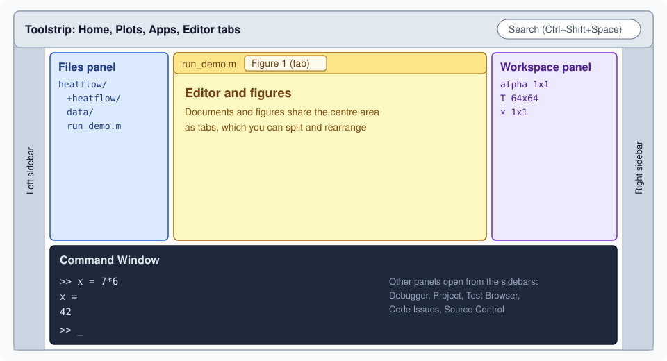

Desktop and Command Window
|
This content was generated with the assistance of AI and should be verified against the official documentation before being relied on in production. |
Written against MATLAB R2026b. The Command Window sessions below were run in GNU Octave 11.3.0 (MATLAB code that Octave also accepts) and the output shown is Octave’s; MATLAB prints the same values with slightly different layout, such as 3×1 size headers. The desktop itself is a graphical program and was checked against the R2026b documentation and release notes, not run here.
The desktop is where you spend most of a first month with MATLAB. This page describes its layout since R2025a, the settings that matter, and the Command Window, which is the interactive prompt at the heart of it. Getting MATLAB is on Getting Started; the variables that the Command Window creates are on Workspace Variables and MAT-Files.
The desktop since R2025a
When MATLAB starts, the desktop appears in its default layout. The documentation lists the areas of that layout as the Files panel (access your files), the Workspace panel (explore the data you create or import), the Command Window (enter commands at the prompt >>) and the sidebars (access tools docked in the desktop and additional panels) (MATLAB documentation: Desktop Basics).

The figure is an original schematic, not a screenshot. The arrangement is the default; everything can be moved.
The R2025a release replaced the previous Java-based desktop with a new one. Its release notes describe these changes:
-
Customizable sidebars on the left, right and bottom. The tools docked there include the Files panel (previously called the Current Folder browser), the Workspace panel and the Command Window. Click a panel’s icon on the sidebar to show or hide it, drag its title bar or sidebar icon to move it, and use the Open more panels button for panels that are not open.
-
Themes. A light or dark theme (and, in the settings, a system-following option) changes the desktop colours: open Settings from the Home tab, then MATLAB > Appearance and set Desktop Theme.
-
Search. The box in the top-right corner finds toolstrip actions, settings and Help Center resources such as functions, examples, answers and videos. Press Ctrl+Shift+Space (Command+Shift+Space on macOS) to reach it from the keyboard; typing
layoutoffers the action that restores the default layout. -
Figures as tabs. Figures open in the centre of the desktop next to documents, rather than as separate windows.
-
Accessibility. Screen-reader and keyboard support for the Command Window, the desktop tools, the Editor and the Live Editor.
-
Settings, not preferences. What used to be called preferences are now settings, in a searchable Settings window.
Two compatibility points matter if you used an earlier release: layouts saved before R2025a are not supported, and some tools, such as the Files and Workspace panels, can no longer be undocked into separate windows (undocking the Command Window, the Find Files panel and the Variables editor is still possible). R2026a and R2026b added more flexible layouts: you can move the Files, Workspace, Command History and Project panels to the centre of the desktop, drag panels to reposition them, and show panel title bars only on hover.
Source: MATLAB release notes: R2025a Environment and R2026b Environment, MATLAB documentation: Configure the Desktop
Panels
Besides the Command Window, the Editor, the Files and Workspace panels, the sidebars open further panels depending on what you are doing. The ones this section meets are:
| Panel | Used for |
|---|---|
Files |
Browsing and opening the files of the current folder (see Search Path, Startup and Files). |
Workspace |
Listing variables, previewing and editing them in the Variables editor. |
Command History |
Browsing, searching and re-running previous statements (Command History). |
Debugger |
Stepping through code (see Debugging). |
Code Issues |
Code Analyzer messages (see Code Analyzer and Code Quality). |
Test Browser |
Running unit tests (see Unit Testing with matlab.unittest). |
Project and Source Control |
Projects and Git integration (see Projects and Source Control). |
The Editor edits scripts, functions and classes, with the Code Analyzer underlining problems as you type, and the Live Editor edits live scripts (see Live Scripts and the Live Editor).
Settings and where they live
Open the Settings window with the Settings button in the Environment section of the Home tab, or with the command preferences. It controls fonts, colours, the initial working folder, the MAT-file version used by save, Command Window behaviour and much more. Settings, the layout and other files are stored in a settings folder that prefdir returns; settings from up to three preceding releases can be imported when you start a new release.
prefdirNot run here: the folder differs per machine and operating system.
Working in the Command Window
Entering statements
Type a statement after >> and press Enter. MATLAB evaluates it immediately; a statement that creates a variable also adds it to the workspace.
a = 1
b = 2;
c = a + b
a = 1, b = 2; c = 3
d = cos(a);
sin(a)
ansOctave 11.3.0 output:
a = 1
c = 3
a = 1
c = 3
ans = 0.8415
ans = 0.8415Reading this output line by line:
-
a = 1has no semicolon, so MATLAB printsa = 1. -
b = 2;ends with a semicolon, which runs the statement and suppresses the display. The printed output has no line forb. -
c = a + bprintsc = 3. -
On the fourth line, statements are separated by a comma or a semicolon. Statements that end with a comma (or nothing) display their result, so
a = 1is printed again;b = 2;is silent; the last one printsc = 3. -
sin(a)is an expression whose value is not assigned, so MATLAB stores it in the special variableans("answer"), andansshows it again.anschanges with every command that returns a value that is not assigned to a variable. The assignmentd = cos(a);does not changeans.
The documentation adds that you can enter several statements before running any of them with Shift+Enter between lines (not needed for paired keywords such as for and end), that Esc clears the current line without running it, and that you can select part of the code at the prompt and press Enter to run only that part.
A = magic(5), B = ones(5) * 4.7; C = A./BOctave 11.3.0 output:
A =
17 24 1 8 15
23 5 7 14 16
4 6 13 20 22
10 12 19 21 3
11 18 25 2 9
C =
3.6170 5.1064 0.2128 1.7021 3.1915
4.8936 1.0638 1.4894 2.9787 3.4043
0.8511 1.2766 2.7660 4.2553 4.6809
2.1277 2.5532 4.0426 4.4681 0.6383
2.3404 3.8298 5.3191 0.4255 1.9149Only A and C are displayed, because B ended with a semicolon.
Command syntax and function syntax
A statement such as format long is written in command syntax: the command name followed by words without parentheses or quotes. It is equivalent to the function call format("long"). Command syntax works only when you are not requesting an output and the arguments are plain words. Syntax, Statements and Variables explains the rules and the traps (hold on and hold("on") are the same call; x = hold on is an error).
Recalling and completing commands
-
The up and down arrows recall previous statements. If you type the first letters of a statement first, the arrows recall only those that begin with the same letters.
-
The Command History panel lists what you ran, across sessions, and re-runs or copies statements.
-
Tab completion completes function and variable names and file names after you type a few characters, and a function hint appears when you pause after typing the opening parenthesis of a call (see Getting Help and Documentation).
-
clcclears the text in the Command Window; it does not touch the workspace. To clear variables, seeclear.
clcNot run here (it clears the screen and has no printed result).
Source: MATLAB documentation: clc
Display format: format
format changes how numbers are displayed. It does not change how they are computed or stored.
x = 0.1 + 0.2;
format long
x
format short
xOctave 11.3.0 output:
x = 0.300000000000000
x = 0.3000MATLAB’s own documentation shows format long printing pi as 3.141592653589793, so a double is displayed with 15 significant digits and a single with fewer. The styles named by the reference page include short (the default, 5 significant digits), long, shortE and longE (scientific notation), shortG and longG (the more compact of fixed-point and scientific notation), shortEng and longEng (engineering notation with exponents that are multiples of 3), hex, bank, rat and +. format compact and format loose control blank lines (the default is loose); format with no arguments restores the default. Since R2021a, fmt = format returns the current style and fmt = format(style) returns the previous one while setting the new one, which lets a function restore the format afterwards:
oldFormat = format("longG");
disp(pi)
format(oldFormat)Not run here (the format output forms are R2021a and later; Octave’s format does not return a value). The style shortG is documented as displaying numeric values in a compact form with 5 total digits.
Showing values: disp, display and implicit display
Omitting the semicolon displays a variable as name = value. The function disp displays only the value, without the name, and is the usual choice inside functions:
disp(pi)
disp([1 2 3])
disp("heatflow")Octave 11.3.0 output:
3.1416
1 2 3
heatflowImplicit display (no semicolon) is a call to the function display, which MATLAB calls for you and which classes can customise (see Properties and Methods). fprintf and sprintf give full control over the text (see Strings and Character Arrays).
Source: MATLAB documentation: disp
Markdown and ANSI styling (R2026b)
R2026b can render text styled with Markdown and with ANSI escape codes directly in the Command Window.
-
markdowndisp(textToRender)renders Markdown (bold, italic, strikethrough, headings, bulleted lists, tables, and LaTeX equations between dollar signs) in the Command Window or the Live Editor. -
The Command Window renders ANSI escape codes for bold, underlined, italic and strikethrough text and for foreground and background colours, when the text is displayed with
fprintf,sprintforcompose.
markdowndisp("**Plate ready:** 5 sensors")Not run here: markdowndisp is new in R2026b, so earlier releases (and Octave) have no such function. The documentation example is the same pattern, a string with **bold text** and ~~strikethrough text~~.
Logging a session: diary
diary records the commands you type and the text output into a file, which is handy for keeping a record of an exploration.
diary heatflow_log.txt
y = 3*4
diary off
type heatflow_log.txtNot run here as written: MATLAB’s diary writes a UTF-8 text file named diary in the current folder if you give no name, appends if the file exists, and also captures keyboard input. Octave’s diary captures output only. diary off stops logging and diary on resumes it; get(0,"Diary") returns "on" or "off". Switch logging off before opening the file so that the log is complete. If the name has no folder part, the path is resolved against the current folder every time logging is enabled, so a changed current folder can send the log to a different file.
Source: MATLAB documentation: diary
Pitfalls
-
Forgetting the semicolon on large arrays floods the window. R2026b truncates the display of very large matrices in the Command Window, but a semicolon is still the habit to build.
-
ansis overwritten by every unassigned result, so do not rely on it in scripts; name results. -
clcis notclear.clconly clears the text on screen. -
format longhides nothing, but it also does not make computations more precise. It changes only the display. -
Layouts saved before R2025a cannot be loaded; reset with the search box and the
layoutaction.
Where older books differ
Books for MATLAB 7 show a desktop with docked Command Window, Command History and Current Folder windows, a Start button, and preferences dialogs. The Current Folder window is today’s Files panel, "preferences" are settings, and the Help browser has been replaced by the web documentation. The Command Window statements shown in those books are still valid.